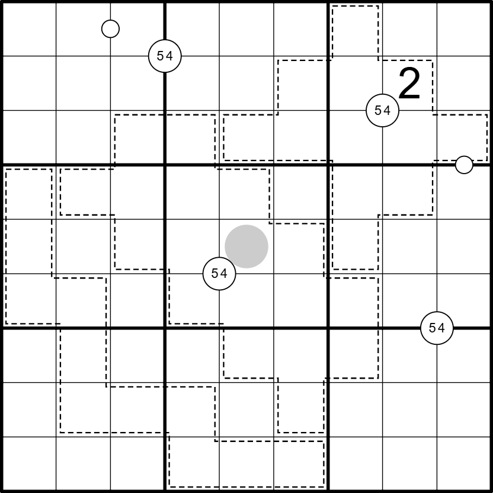

54-kooien - 🟠

LINK
REGELS:
- Standaard sudoku: Plaats de cijfers van 1 t/m 9 eenmaal in elke rij, kolom, en 3x3 blok.
- Custom: De som van de getallen in elke kooi is 54.
- Quadruples: Cijfers in een witte cirkel staan minimaal één keer in de vier omringende vakjes.
- White Kropki: Vakjes die gescheiden zijn door een witte stip bevatten opeenvolgende cijfers.
- Oneven: Grijze cirkels bevatten oneven getallen.